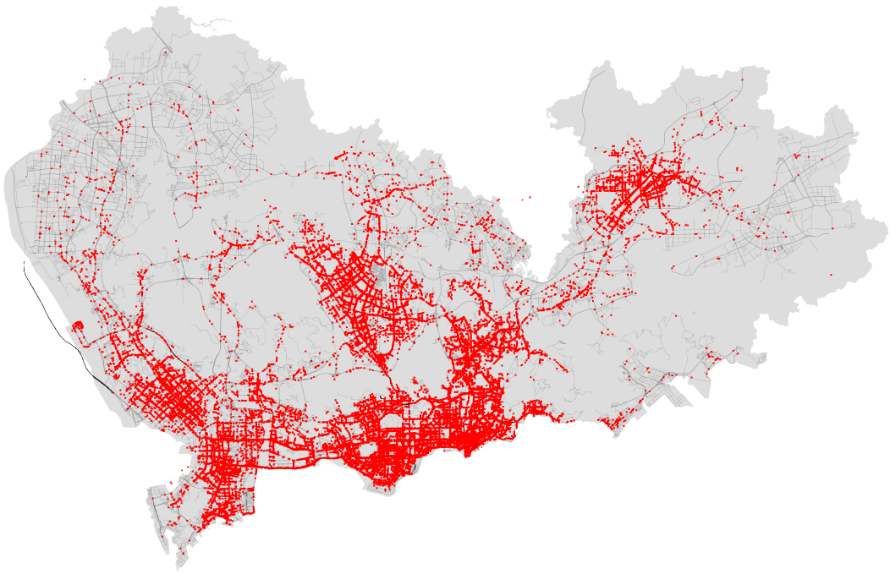
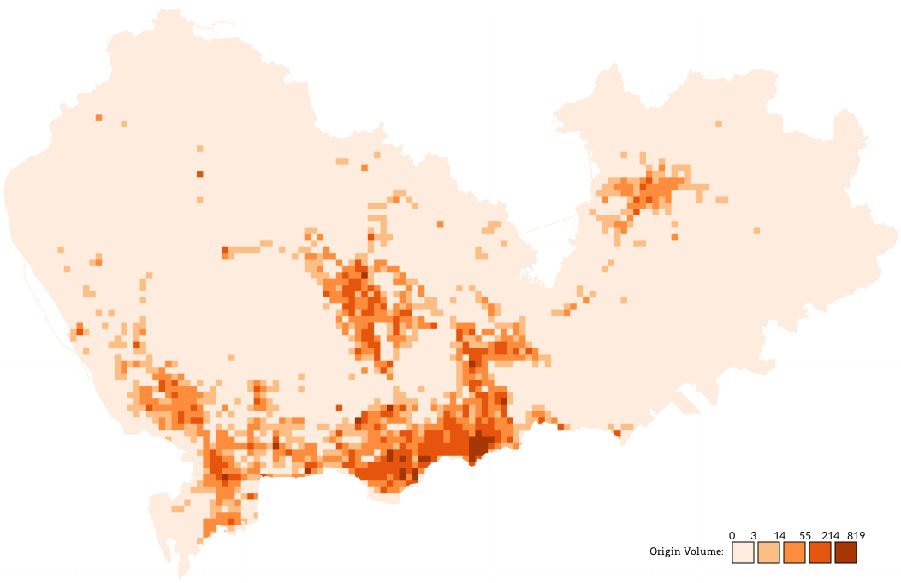
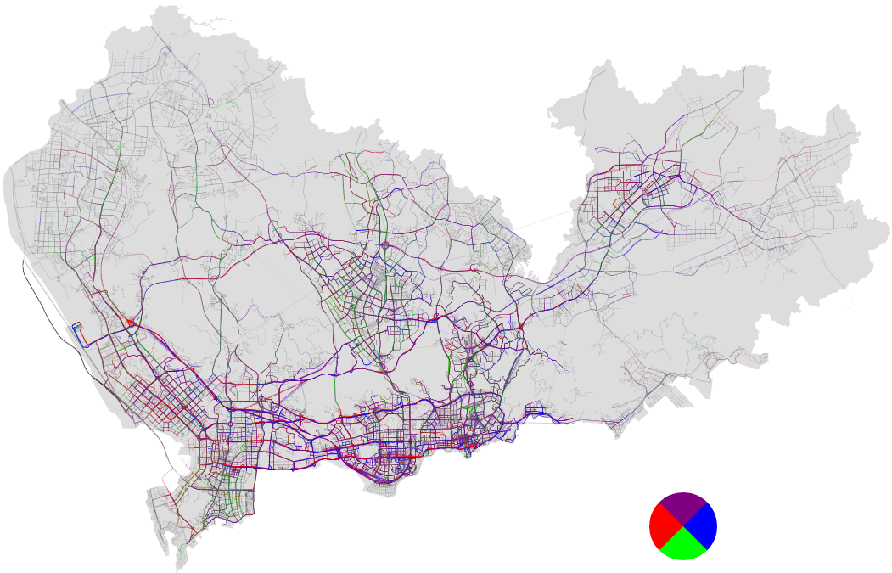
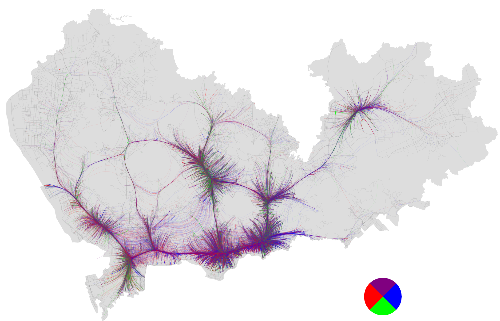
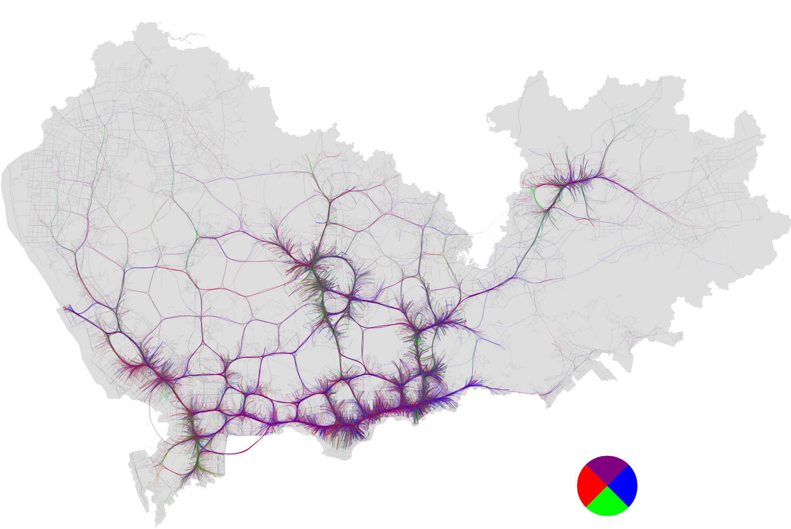
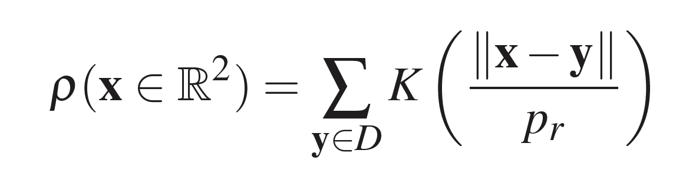

作者：曾伟 日期: 2019年4月7日


图一：常见O/D绘制方法：将每个起/讫点绘制为一个点（左）；整个城市划分为若干区域，例如网格化或者按照行政区划分（右）。
为了展示出行的起（origin）讫（destination）点，常用的方法有：1）将每个起/讫点绘制为一个点（图一左）；2）将整个城市划分为若干区域，例如网格化（图一右）或者按照行政区划分。 两种方法都采用了聚集（aggregation）的可视化方式，不同点在于聚集发生的阶段：方法一在渲染（rendering）阶段，而方法二在数据处理阶段。 最终，用户通过视觉感知（visual perception）获取有用信息： 通过上图两种方法绘制出的深圳市某周出租车起点记录，我们不难发现深圳市出租车集中于罗湖、福田等中心区域。（注：南澳等地区极少有出租车记录，故未展示）。
然而，上述两种方法只能绘制单独的起点或者讫点，该怎样绘制出每组起讫点之间的链接呢？ 我们可以用一条直线链接每组起讫点，线的颜色可以用来描述起讫点方向（图二左）。 该方法最大的问题在于可扩展性（scalability）不强，如图所示，当出租车记录比较多的时候，整个画面已变得混乱，导致我们观测不出什么有效信息。 除此之外，我们可以将起讫点映射到地图上（map matching），从而绘制出如图二右的地图。 然而，由于每条道路上聚集了大量的出租车轨迹，我们已不可能找出一组起讫点之间的真正链接。 当然，我们也可以将整个城市划分为区域，统计相邻区域的出租车通行数量，最后用带箭头的线段绘制。 这种方法聚集了所有组的起讫点，忽略了每组起讫点的独立性，在此不予讨论。

图二：常见OD轨迹绘制方法：用直线将OD连起来（左）；将OD映射到地图上再展示（右）。
我们可以将起讫点建模为一种图可视化，这样我们即可采用边捆绑（Edge Bundling）技术来有效地解决视觉混乱问题。 边捆绑技术一般采用方法有： 首先，将每条边的起讫点固定，把边划分为等距线段； 其次，根据边与边之间的相关性，将线段上的点朝着特定方向平移； 再次，采用一些曲线函数，将线段平滑化。 这个过程通常迭代多次以取得稳定结构。 基于所采用的技术手段，边捆绑技术可以大致分为三类：几何（geometry），力（force），或图像（image）。 由于算法的不断改进以及计算机算力的快速提升，基于图像的边捆绑技术已经能够实时地处理百万数量的边，已使该类方法成为目前主流。 以上两张图就是将基于核密度估计（Kernel Density Estimation）边捆绑技术（KDEEB）应用于深圳市出租车轨迹数据上。 通过这两张图，我们可以更加直观的感受到深圳市出租车行驶的主要区域及线路。


图三：边捆绑（Edge bundling）技术可用于OD轨迹绘制中，不同核密度估计参数结果不一样。
该方法采用的核密度估计算法如下：

通过改方程，不难发现该算法一项主要参数为Pr，代表核密度估计中的核宽度（bandwidth）。 该参数决定了边捆绑程度的大小：参数越大，捆绑的边越多（图三左）；反之，参数越小，捆绑的边越小（图三右）。 这样就带来一个问题，Pr采取多大才是合适的呢？ 原文推荐为图像尺寸的5%，即图三左采用的参数。 但是，该方法没有考虑出租车轨迹的分布不均衡性，导致中心区域的轨迹过于聚集。 图三右采用基于出租车轨迹得出的Pr，可以明显看出更多细节部分。
然而，我们还是不能定量地判断图三中是左边还是右边的参数更合适。 某种意义上，直线链接（图二左）可当做捆绑程度为0，而地图映射（图二右）可当作捆绑程度为1的边捆绑方法。 因此，我们可将图二、图三中四张图同时比较， 这样浮现出一个可视化领域更深层的问题：怎样平衡可视化的简洁（simplification）与准确（accuracy）。
为此，我们提出一种新式的路径感知（route-aware）边捆绑方法（RAEB）。 该方法保留了KDEEB的优点：速度快，简洁； 同时，该方法能够根据起讫点属性自动调整参数，以提高准确性方面的要求。 以下图像展示了将RAEB和KDEEB应用于深圳出租车轨迹的对比图。
该论文目前已被EuroVis’19接受。在此特别感谢本文合作者 申乔木 ， 蒋宇哲， Prof. Alexandru Telea